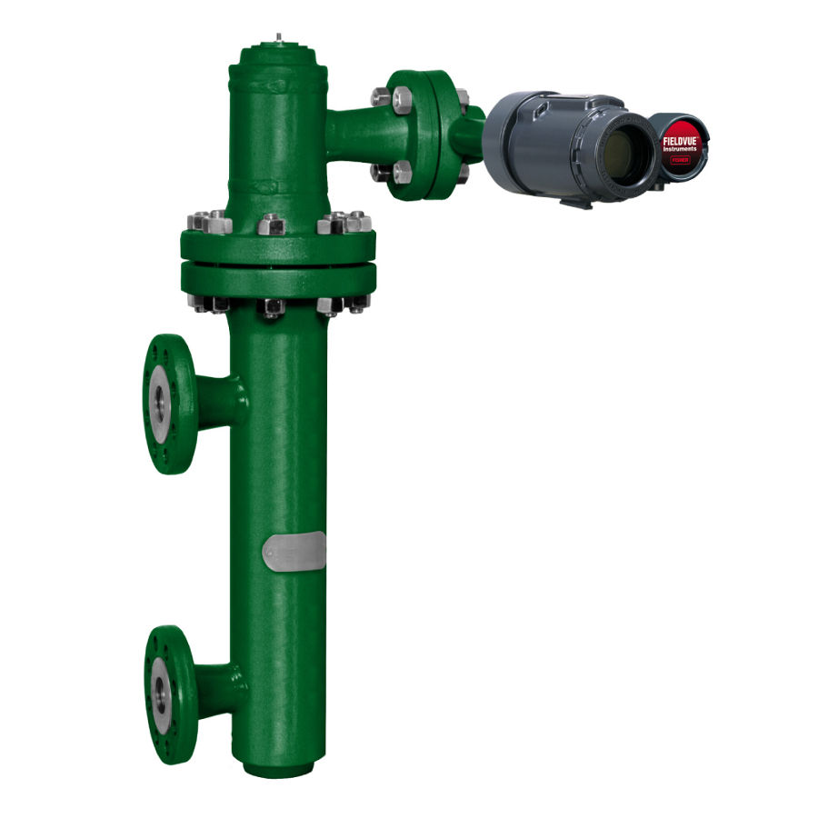
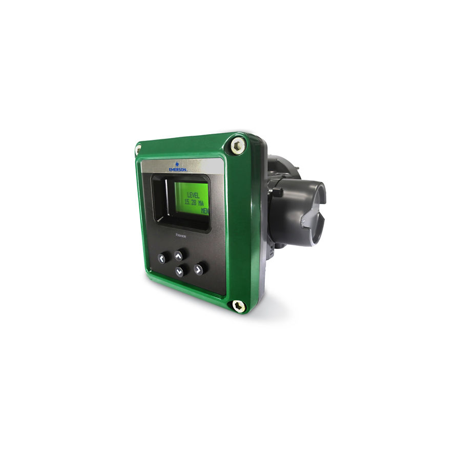
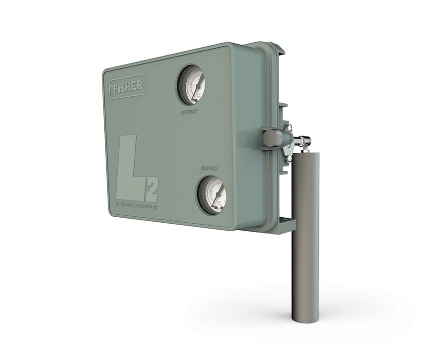
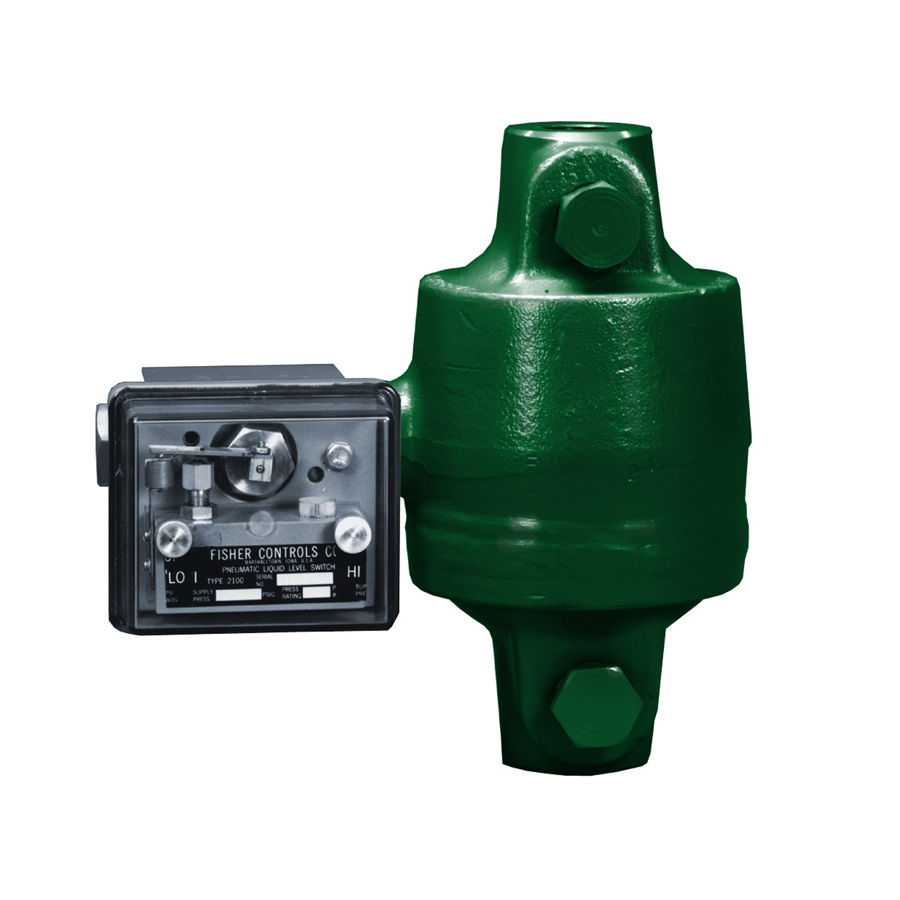
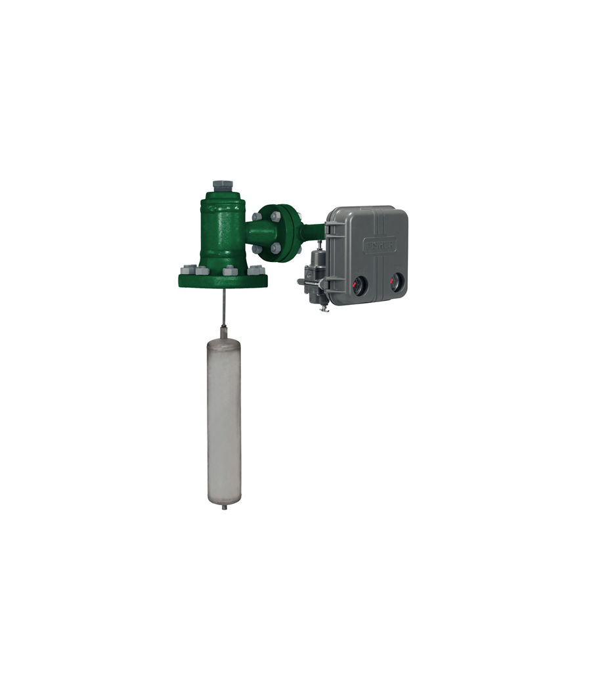
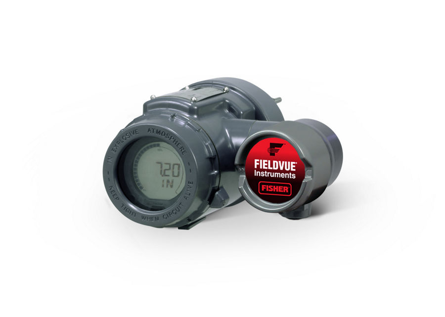
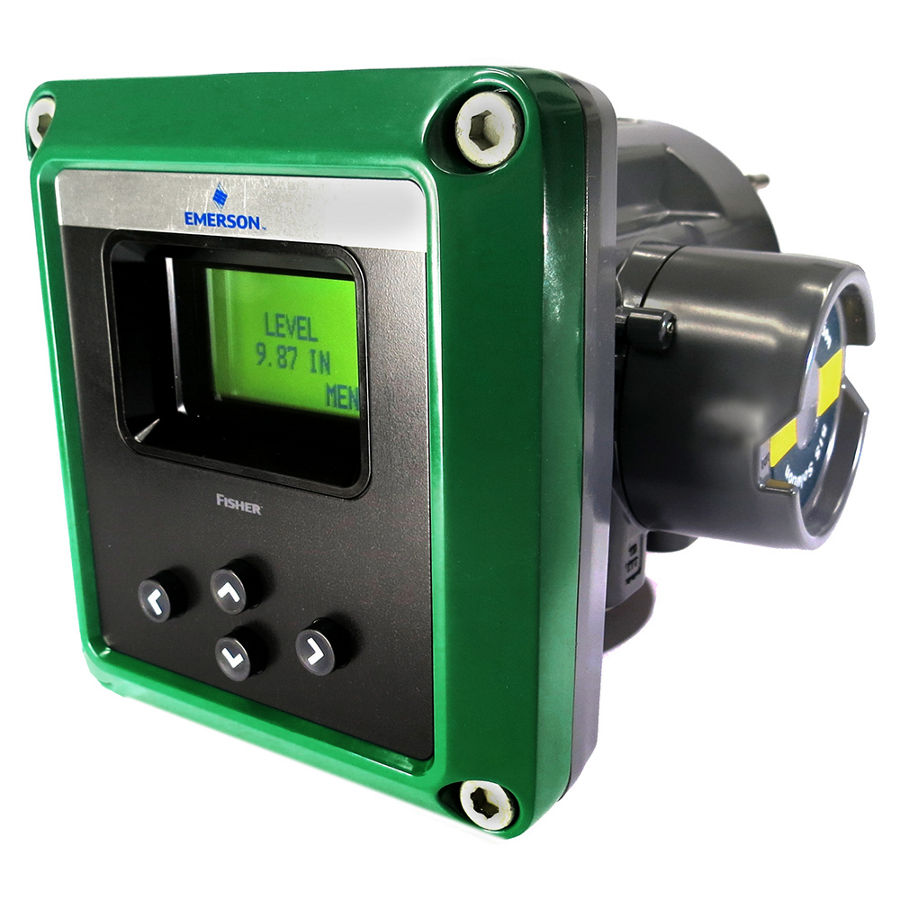
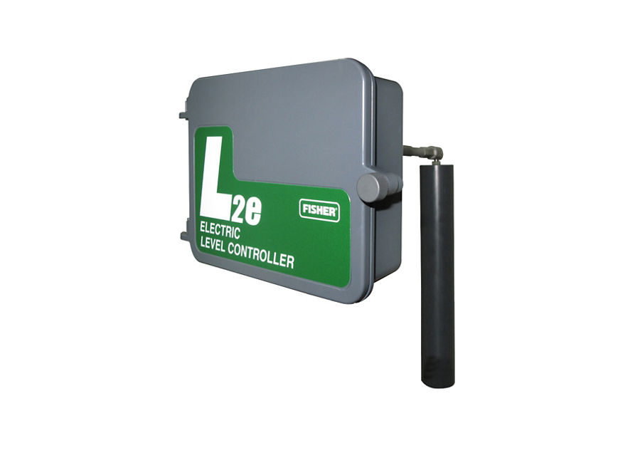

Fisher 249 Series Caged Sensors
Cảm biến mức displacer dạng cage lắp ngoài bình; đo mức, mặt phân cách, tỷ trọng; tới CL2500.
Bộ điều khiển mức 2500 với cảm biến displacer 249, L2/L2sj, L2e và bộ điều khiển mức số DLC3100/DLC3020f cho bình tách, bồn, tháp.
Fast Group cung cấp điều khiển & đo mức chất lỏng Fisher chính hãng, đủ CO/CQ. Mỗi model có trang riêng với mô tả, biến thể, tài liệu kỹ thuật và hướng dẫn gửi RFQ.

Cảm biến mức displacer dạng cage lắp ngoài bình; đo mức, mặt phân cách, tỷ trọng; tới CL2500.

Bộ điều khiển/truyền mức khí nén 2500 + sensor 249; mức, mặt phân cách, tỷ trọng; tới CL2500.

Bộ điều khiển/truyền mức số HART trên sensor 249; LCD + 4 nút, NE 107; bản SIS.

Bộ điều khiển mức displacer khí nén cho bình tách áp cao; L2sj phát thải thấp; sensor tới CL1500.

Bộ điều khiển mức Fisher 2100. The Fisher 2100 on/off pneumatic switch and 2100E electric switch sense high or low liquid levels. Find more…

Bộ điều khiển mức Fisher 249 (cageless). Fisher 249 cageless sensors are generally used on applications requiring large displacers that are…

Bộ điều khiển mức Fisher DLC3020F. The FIELDVUE DLC3020f digital level controller is a FOUNDATION™ fieldbus communicating instrument used to…

Bộ điều khiển mức Fisher DLC3100 SIS. The FIELDVUE DLC3100 SIS digital level controller is a HART communicating instrument that measure liquid…

Bộ điều khiển mức Fisher L2E. The Fisher L2e electric on/off level controller uses a displacer-type sensor to detect the liquid level or…
Trụ sở TP. Hồ Chí Minh và văn phòng Vũng Tàu đều tiếp nhận RFQ, tư vấn cấu hình và bàn giao bộ chứng từ CO/CQ; bảo hành chính hãng 12 tháng kể từ ngày giao hàng. Yêu cầu gửi trong giờ làm việc được phản hồi trong cùng ngày; giao hàng toàn quốc.
150/41 Nguyễn Cư Trinh, P. Cầu Ông Lãnh
51 Lê Văn Lộc, P. Vũng Tàu